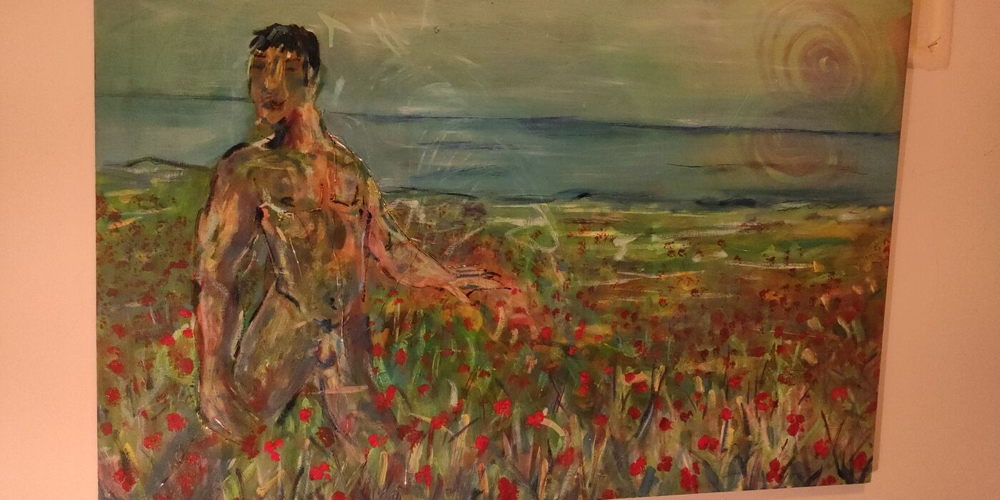

Pintura · Escultura · Performance · Barcelona
Amantes, cuerpos al sol y amapolas
La obra de David Mirás es instintiva y cálida: pedazos de vida, encuentros y recuerdos llenos de color.


La obra


La obra en movimiento
Performances, procesos de pintura y retratos que nacen con el dedo sobre el móvil.


El taller
Miras al otro lado
Su espacio en Barcelona: exposiciones de obra y talleres de pintura, dibujo y escultura. Aquí talló «Ocaña en tránsito», 320 cm de grafito en homenaje al pintor Ocaña.
«Quizás David con su obra nos devuelve la imagen robada o un suave recuerdo lleno de color.»Tom Puey, coleccionista e historiadorApúntate a un taller


Exposiciones
- Colectiva yo · tú · nosotros · ellas Inusual Project, Barcelona
- Performance Mutabilidad Sala Freedonia, Barcelona
- Colectiva Testimoni del conflicte Poble Vell, Corbera d’Ebre
- Taller propio Miras al otro lado Barcelona
¿Hablamos de tu obra?
Encargos, compra de obra, talleres y exposiciones.
Escribir por WhatsApp [EMAIL] Instagram [@USUARIO]© 2026 David Mirás · BarcelonaAviso legal · Privacidad